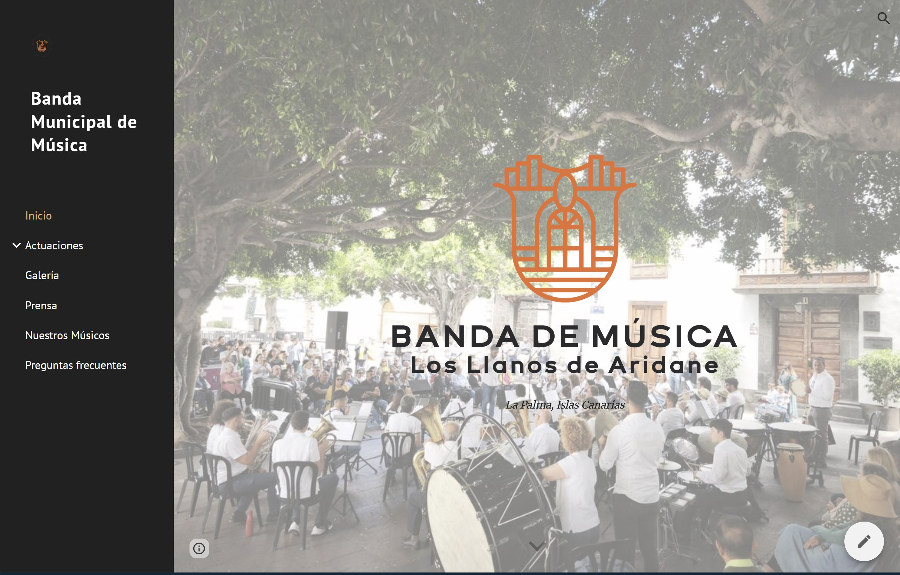

Banda Municipal de Música
Plataforma digital e histórica dedicada a la Banda de Los Llanos de Aridane (Est. 1868). Un espacio enfocado en la divulgación de su trayectoria, su presencia actual y la conservación de su memoria institucional y documental en el entorno isleño.
Visitar Sitio Web ↗